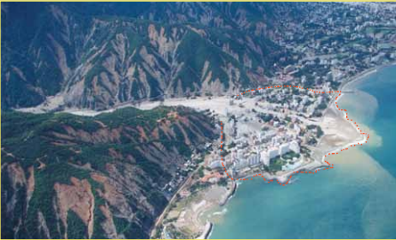
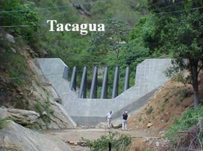
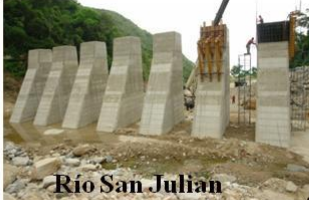
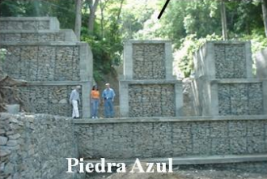
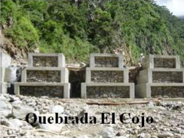
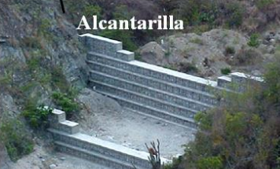
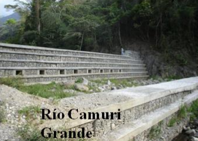
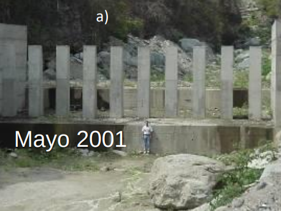
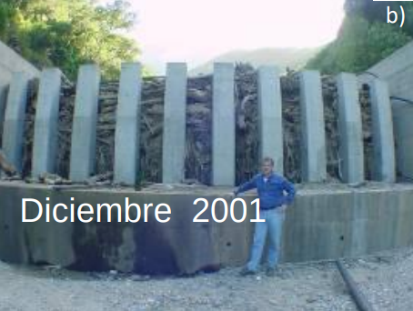
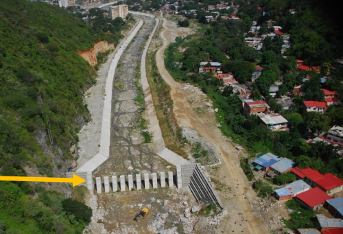

AVENIDAS TORRENCIALES
Prof. Edier Aristizábal

"Debris flows are among the most dangerous and destructive natural hazards that affect humans."
Jakob & Hungr (2005)
1. Introducción al curso

¿Qué vamos a aprender?
Reconocer el fenómeno y sus evidencias en campo
Entender la física: lluvia, sedimentos, reología
Modelar el alcance y la intensidad
Zonificar la amenaza con la guía del SGC
Mitigar el riesgo

Organización
| Intensidad | 4 h/semana, 2 sesiones de 2 h |
|---|---|
| Prerrequisito | Geomorfología (recomendados: SIG y Sensores Remotos) |
| Salida de campo | 3 días / 2 noches a una cuenca torrencial de Antioquia |
| Programa | Programa_AvenidasTorrenciales.pdf |
Libro guía

Bibliografía base
- Jakob, M., McDougall, S. & Santi, P. (2024). Advances in Debris-flow Science and Practice. Springer.
- Jakob, M. & Hungr, O. (2005). Debris-flow Hazards and Related Phenomena. Springer.
- SGC (2026). Guía metodológica para la zonificación de amenaza por avenidas torrenciales.
- SGC – PUJ (2021). Guía metodológica para la zonificación de amenaza por avenidas torrenciales.
- Iverson, R. M. (1997). The physics of debris flows. Reviews of Geophysics.
2. ¿Qué son las avenidas torrenciales?
Agua + sedimentos + pendiente

Agua, finos y gruesos

De la ladera al abanico

Procesos de ladera y de cauce

Dos miradas: geología e hidrología

¿Quién transmite el momento?
| Dominado por sólidos | Dominado por fluido | |
|---|---|---|
| Mecanismo | Colisiones y fricción entre granos | Turbulencia del agua |
| Concentración | Alta (> 60 %) | Moderada a baja (20–60 %) |
| Ejemplo | Flujo de detritos grueso | Flujo de lodo, hiperconcentrado |
Clasificación por concentración

Taxonomía de flujos no newtonianos

Procesos de transporte de masa

Anatomía de un flujo de detritos

Frente, cuerpo y cola

Zona de inicio, tránsito y depósito

Inicio

Tránsito

Depósito

Abanicos aluviales


Illgraben: un laboratorio natural
Illgraben en acción
Flujo de detritos – El Dorado, California (2022)
This amazing video captured by San Bernardino county public works - watch all the processes of a #debrisflow of the El Dorado scar September 12, 2022 - heavy rain rates on scar at 8000 feet in 1 hour pic.twitter.com/ZApuQZ5FuP
— Alex Tardy Skiwxman (@SanDiegoWCMwx) October 25, 2022
Flujos de detritos vs. deslizamientos
En zona urbana
Lahares: avenidas torrenciales volcánicas


Armero (1985)


Armero hoy

Avenidas torrenciales en Colombia

San Carlos (1990)


Tarazá (2007)

Salgar (2015)

Salgar (2015)
Salgar: ¿se sabía?

La Liboriana (2015)

Mocoa (2017)

Mocoa (2017): explicación geológica
Yalí (2020)

Anorí (2020)

Dabeiba (2020)

Piedra Gorda, Itagüí

En el mundo: Vargas, Venezuela (1999)

Cascadas de amenazas

Multiamenaza (Gill & Malamud, 2014)
Detonante una amenaza dispara otra
Influencia una amenaza cambia la probabilidad de otra
Coincidencia coinciden en espacio y tiempo

Lluvia + sedimentos → avenida torrencial

Lluvia + enjambre de movimientos en masa → avenida torrencial

Lluvia + sismo → avenida torrencial

Glaciar + piroclastos → avenida torrencial

Embalse + rotura de presa → avenida torrencial

Sismo + GLOF → avenida torrencial

Represamiento por deslizamiento

Chamoli, India (2021)

Rasuwagadhi, frontera Nepal–Tíbet
Antes y después desde el espacio
3. La lluvia como detonante

Lluvia en los Andes del norte

Eventos de lluvia y movimientos en masa


Lluvia, ENSO y movimientos en masa


Lluvia y movimientos en masa


Umbrales de lluvia
$$I = \alpha \, D^{-\beta}$$
Por encima de la curva intensidad–duración (I–D) aumenta la probabilidad de que se generen movimientos en masa y flujos.
Convectiva corta y muy intensa → flujos por escorrentía
Antecedente larga y moderada → suelos saturados y deslizamientos
Flash floods

4. Respuesta de la cuenca

Ladera y área de drenaje

Áreas de aporte variable

Respuesta de la cuenca

Regulación de la cuenca

Permeabilidad secundaria: macroporos

Morfometría: ¿flujo de detritos o creciente?
$$R_{Melton} = \frac{H_{max} - H_{min}}{\sqrt{A}}$$
| Tipo de cuenca | Área (km²) | Melton | Pendiente abanico (°) |
|---|---|---|---|
| Dominada por coluvión | 0,01 | 1,59 | > 25 |
| Dominada por flujos de detritos | 0,74 | 0,88 | ~10 |
| Dominada por crecientes | 15,3 | 0,32 | ~3 |
Calcula el índice de Melton
Relieve H (m): 900
Área A (km²): 2
RMelton = 0.64
Umbrales orientativos: < 0,3 crecientes · 0,3–0,6 inundación de detritos · > 0,6 flujo de detritos (Wilford et al., 2004)
Umbrales morfométricos en Colombia (SGC, 2026)
| Variable | Grupo 2 (torrencial) mín. | Grupo 2 máx. |
|---|---|---|
| Área (km²) | 0,22 | 18,68 |
| Orden del cauce | 2 | 4 |
| Índice de Melton | 0,01 | 0,92 |
| Densidad de drenaje | 0,75 | 4,21 |
5. Incorporación de sedimentos (entrainment)

El flujo crece en el camino
$$V_{final} = V_{inicial} + \int_0^{L} E(x)\, dx$$
La tasa de erosión del cauce E (m³/m) puede multiplicar el volumen inicial en uno o dos órdenes de magnitud (bulking).
¿Lecho seco o lecho húmedo?
Efecto del volumen
6. Reología de flujos
Fuerzas resistentes: agua clara vs. lodo y detritos

Newtoniano vs. no newtoniano
Fluido de Bingham

$$\tau = \tau_y + \eta \, \frac{du}{dz}$$
Modelos reológicos

Herschel–Bulkley
$$\tau = \tau_y + K \left(\frac{du}{dz}\right)^n$$

Cuadrático de O'Brien
$$\tau = \tau_y + \eta \frac{du}{dz} + \zeta \left(\frac{du}{dz}\right)^2$$

Voellmy
$$\tau = \mu \, \sigma_n + \frac{\rho \, g \, u^2}{\xi}$$
fricción $\mu$: término de Coulomb, controla dónde se detiene
turbulencia $\xi$: controla la velocidad
Ideal para flujos granulares de alta montaña, con bloques y poca arcilla.
¿Cuál uso?

Clasificación de flujos no newtonianos

Clasificación de flujos no newtonianos

Procesos, modelo conceptual y modelo reológico

Reología de flujos

Números adimensionales
$$N_{Bag} = \frac{\nu_s}{1-\nu_s}\,\frac{\rho_s\,\delta^2\,\dot\gamma}{\mu} \qquad N_{Sav} = \frac{\rho_s\,\delta^2\,\dot\gamma^2}{(\rho_s-\rho_f)\,g\,h\,\tan\phi}$$
Bagnold colisiones vs. viscosidad
Savage colisiones vs. fricción
Depósitos: leer el pasado

Litofacies de flujos de detritos

Litofacies de flujos de detritos

Diques laterales (levées) y lóbulos


Imbricación


Formato de campo: tipo de flujo

Checklist para la salida de campo
- Bloques métricos lejos del cauce
- Diques laterales y lóbulos
- Matriz soportada vs. clasto soportada
- Marcas de impacto y de lodo en árboles
- Cicatrices en la cuenca alta
- Abanico y cambio de pendiente
- Testimonios de la comunidad

7. Ecuaciones de gobierno
Saint-Venant (aguas someras) 1D
$$\frac{\partial h}{\partial t} + \frac{\partial (h u)}{\partial x} = E$$
$$\frac{\partial (h u)}{\partial t} + \frac{\partial}{\partial x}\left(h u^2 + \tfrac{1}{2} g h^2 \cos\theta\right) = g h \sin\theta - \frac{\tau_b}{\rho}$$
masa momento $\tau_b$ = reología
Euleriano vs. lagrangiano
Modelos de dos fases
Sólidos y fluido con su propia velocidad
La presión de poros controla la fricción efectiva: el flujo se "licúa" en el frente y se frena cuando drena (Iverson, 1997; Pudasaini, 2012).
Tres fases: sólidos gruesos + finos + fluido (Pudasaini & Mergili, 2019) → r.avaflow
Experimentos en el canal del USGS
8. Modelos de propagación

Empíricos: línea de energía

$$\frac{H}{L} = \tan\alpha$$
$$L = 1.9\, V^{0.16} H^{0.83}$$
Caudal pico
$$Q_p = C_f \, V^{5/6}$$
$C_f$ ≈ 0,01 lodos · 0,10 granulares · 0,20 extremo
Dirección de flujo


Herramientas
| Tipo | Modelo | Qué da |
|---|---|---|
| Empírico / SIG | Flow-R, Flow-Py, GPP, r.randomwalk, DebrisFlow Predictor | Alcance y susceptibilidad regional |
| Hidrológico-erosivo | OpenLISEM | Lluvia → escorrentía → flujo |
| Una fase 2D | FLO-2D, HEC-RAS, Iber-NNF | Profundidad y velocidad |
| Multifase | r.avaflow | Cascadas de procesos |
Flow-R
Dirección de flujo (Holmgren) + persistencia + línea de energía
r.avaflow
HEC-RAS: flujos no newtonianos

Modelación numérica vs. experimento
9. Guía metodológica del SGC
Decreto 1807 de 2014 (compilado en el Decreto 1077 de 2015)
Incorporar la gestión del riesgo en los POT, PBOT y EOT
Dos escalas
| Escala | Qué se hace | Producto |
|---|---|---|
| Tamizaje | Evaluación preliminar de torrencialidad | Ratificación o exención |
| 1:25 000 | Cuenca: volúmenes, escenarios, modelación | Insumos y área de depósito |
| 1:2000 | Suelo urbano, de expansión y centros poblados | Amenaza alta, media y baja |
Evaluación preliminar de torrencialidad
$$T = \sum_{k=1}^{7} w_k \, V_k \qquad V_k \in \{0,\ 0.5,\ 1\}$$
históricosdepósitosinventario MMescorrentíaantrópicosmorfometríamaterial leñoso
Intensidad del flujo
$$I_F = h_{max} \cdot u^2_{max} \quad [m^3/s^2]$$
| $I_F$ (m³/s²) | Categoría |
|---|---|
| $\ge 50$ | Alta |
| 1 – 50 | Media |
| < 1 | Baja |
Amenaza = intensidad × probabilidad
| Intensidad | Probabilidad (T) | Amenaza |
|---|---|---|
| Alta | cualquiera | Alta |
| Media | Alta (T < 30 años) | Alta |
| Media | Media / Baja | Media |
| Baja | Alta | Alta |
| Baja | Media | Media |
Visor de cuencas morfométricas del SGC
1455 cuencas y 421 eventos (DesInventar, SIMMA, UNGRD, IDEAM)
Abrir el tablero del SGC10. Evaluación del riesgo
$$R = A \times V \times E$$
Amenaza Vulnerabilidad Exposición
Exposición
Vulnerabilidad física

Gestión del riesgo

11. Medidas de mitigación

Activas vs. pasivas
Activas reducen la probabilidad: manejo de la cuenca, estabilización de cauces
Pasivas reducen las consecuencias: presas abiertas, barreras, canalización, áreas de depósito
No estructurales ordenamiento territorial, alerta temprana
Vargas (Venezuela) después de 1999

Presas abiertas de ranuras


Presas de gaviones


Presas escalonadas


¿Funcionan?


Canalización y presas en serie

Presa de peine


Barreras flexibles
Ensayo a escala real: 200 m³
Sin y con obras SABO
12. Para la salida de campo
Observar · medir · preguntar